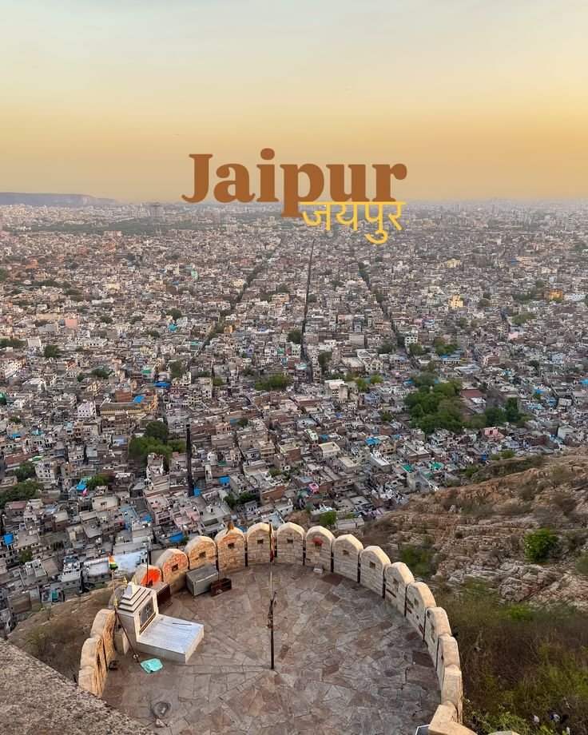
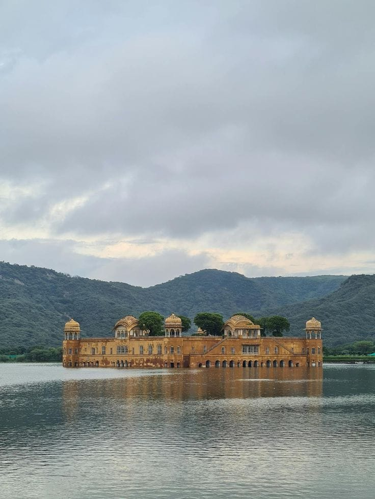
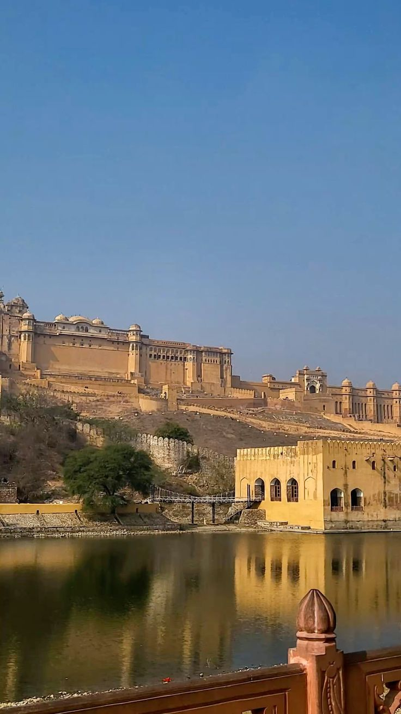
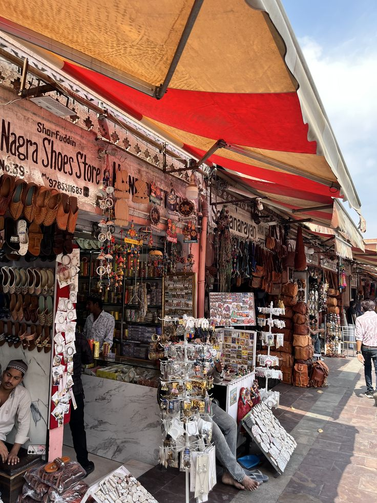
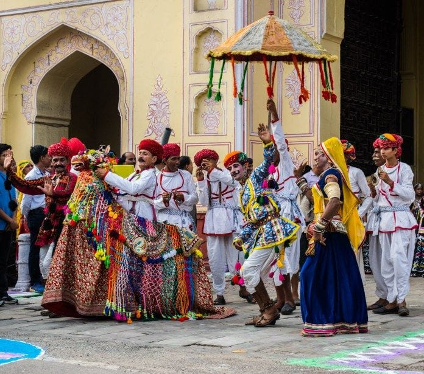
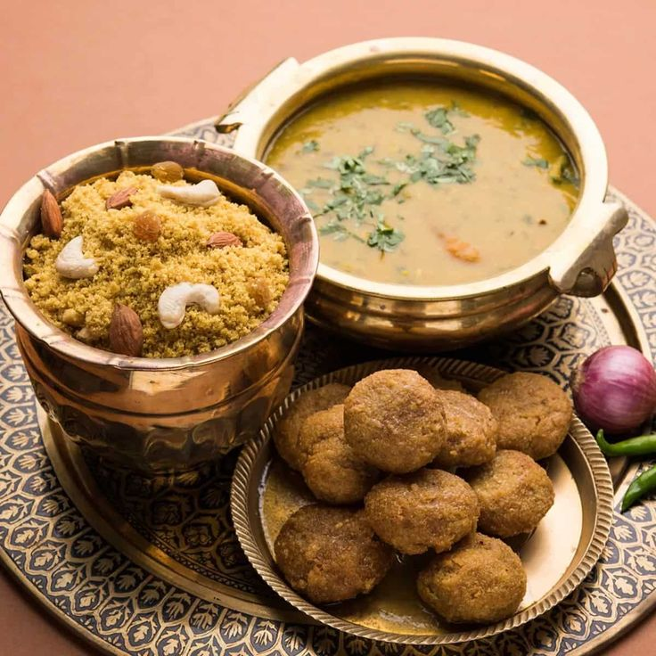

Jaipur Over_all View
Jaipur, the capital of Rajasthan, is famously known as the “Pink City.” It is renowned for its royal heritage, magnificent palaces, forts, and vibrant bazaars. The city beautifully blends tradition with modernity, making it one of India’s most popular tourist destinations.
Peaceful Nature Spot (Jal Mahal)
Jal Mahal, located in the middle of Man Sagar Lake, is a serene and picturesque spot in Jaipur. Surrounded by water and hills, it offers a peaceful escape and is admired for its architectural beauty and scenic charm.


Historical Place (Amber Fort)
Amber Fort is one of Jaipur’s most iconic landmarks, built in the 16th century by Raja Man Singh. Known for its majestic architecture, intricate carvings, and stunning views, the fort reflects the grandeur of Rajputana history.
Local Market (Johari Bazaar)
Johari Bazaar is a bustling market in Jaipur, famous for its traditional jewelry, gemstones, textiles, and handicrafts. It is a lively place where visitors can shop for souvenirs and experience the vibrant culture of Rajasthan.


Famous Festival (Teej Festival)
Teej Festival is one of Jaipur’s most celebrated events, dedicated to Goddess Parvati. Women dress in colorful attire, sing folk songs, and participate in processions, making it a vibrant cultural celebration of monsoon and devotion.
Famous Local Food Items (Meals → Dal Baati Churma)
Dal Baati Churma is a traditional Rajasthani dish and a specialty of Jaipur. Crispy baatis served with spicy dal and sweet churma create a wholesome meal that reflects the rich flavors of Rajasthan’s cuisine.
